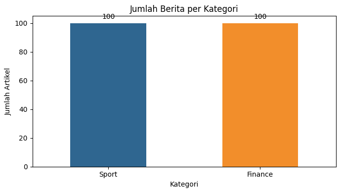
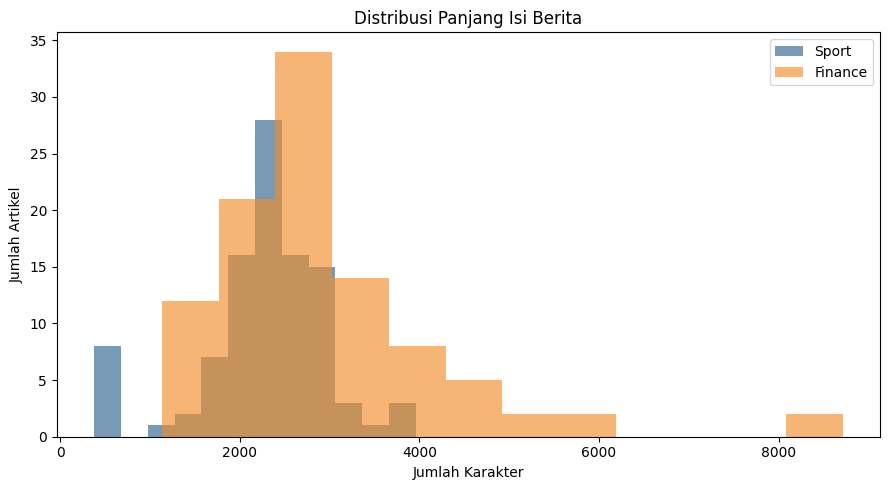
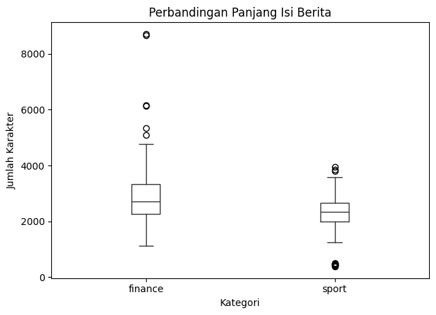

Crawling Berita Detik.com: Sport dan Finance#
Notebook ini membahas proses Web Search & Mining untuk mengumpulkan berita dari detik.com menggunakan pendekatan CRISP-DM sampai tahap Data Preparation. Dataset digunakan untuk membandingkan karakteristik berita kategori sport dan finance.
Business Understanding#
Latar Belakang#
Berita online memiliki jumlah dan topik yang terus bertambah. Pengelompokan berita berdasarkan kategori dapat membantu proses pencarian informasi, pengarsipan, analisis tren, dan pengembangan sistem rekomendasi atau klasifikasi berita.
Tujuan#
Tujuan proyek ini adalah membangun dataset berita berbahasa Indonesia dari detik.com yang terdiri dari dua kategori:
100 berita
sportdari detikSport100 berita
financedari detikFinance
Setiap berita disimpan dengan kolom id, isi_berita, label, dan url.
Pertanyaan yang Ingin Dijawab#
Apakah data berita dari kategori sport dan finance dapat dikumpulkan secara seimbang?
Seperti apa perbedaan panjang isi berita pada kedua kategori?
Kata atau topik apa yang paling sering muncul pada masing-masing kategori?
Apakah dataset sudah cukup bersih dan lengkap untuk digunakan pada tahap analisis berikutnya?
Kriteria Keberhasilan#
Proses crawling dianggap berhasil apabila:
tersedia 200 artikel unik;
terdapat tepat 100 artikel dengan label
sportdan 100 artikel dengan labelfinance;setiap baris memiliki
id, isi berita, label, dan URL lengkap;tidak ada URL duplikat;
tidak ada isi berita yang kosong;
isi artikel sudah dipisahkan dari navigasi, iklan, dan elemen HTML yang tidak diperlukan.
Data Understanding#
Data diperoleh dari halaman kategori dan indeks berita detik.com. URL sumber setiap artikel dipertahankan pada kolom url agar proses pengumpulan dapat ditelusuri dan diverifikasi.
Struktur Dataset#
Kolom |
Tipe |
Keterangan |
|---|---|---|
|
string |
Identitas unik, yaitu |
|
text |
Judul dan isi utama artikel yang sudah dibersihkan |
|
category |
Kategori berita: |
|
string |
URL lengkap artikel dari detik.com |
Pemeriksaan Awal#
Pemeriksaan awal meliputi jumlah data, distribusi label, nilai kosong, URL duplikat, duplikat isi berita, panjang teks, serta contoh isi artikel. Hasil pemeriksaan dan grafik ditampilkan pada sel-sel berikutnya.
Data Preparation Sederhana#
Pada tahap ini dilakukan pembersihan ringan, yaitu menghapus tag HTML dan elemen non-berita, merapikan spasi, mengabaikan artikel yang terlalu pendek, serta menghindari URL duplikat. Tokenisasi, TF-IDF, dan pembagian data latih-uji belum dilakukan karena notebook ini berhenti pada tahap pemahaman data.
%pip install pandas requests beautifulsoup4
Requirement already satisfied: pandas in .\.venv\lib\site-packages (2.3.3)
Requirement already satisfied: requests in .\.venv\lib\site-packages (2.32.5)
Requirement already satisfied: beautifulsoup4 in .\.venv\lib\site-packages (4.15.0)
Requirement already satisfied: numpy>=1.22.4 in .\.venv\lib\site-packages (from pandas) (2.0.2)
Requirement already satisfied: python-dateutil>=2.8.2 in .\.venv\lib\site-packages (from pandas) (2.9.0.post0)
Requirement already satisfied: pytz>=2020.1 in .\.venv\lib\site-packages (from pandas) (2026.3.post1)
Requirement already satisfied: tzdata>=2022.7 in .\.venv\lib\site-packages (from pandas) (2026.3)
Requirement already satisfied: charset_normalizer<4,>=2 in .\.venv\lib\site-packages (from requests) (3.5.1)
Requirement already satisfied: idna<4,>=2.5 in .\.venv\lib\site-packages (from requests) (3.19)
Requirement already satisfied: urllib3<3,>=1.21.1 in .\.venv\lib\site-packages (from requests) (2.6.3)
Requirement already satisfied: certifi>=2017.4.17 in .\.venv\lib\site-packages (from requests) (2026.7.22)
Requirement already satisfied: soupsieve>=1.6.1 in .\.venv\lib\site-packages (from beautifulsoup4) (2.8.4)
Requirement already satisfied: typing-extensions>=4.0.0 in .\.venv\lib\site-packages (from beautifulsoup4) (4.16.0)
Requirement already satisfied: six>=1.5 in .\.venv\lib\site-packages (from python-dateutil>=2.8.2->pandas) (1.17.0)
Note: you may need to restart the kernel to use updated packages.
import re
import time
from urllib.parse import urljoin, urlparse
import pandas as pd
import requests
from bs4 import BeautifulSoup
from IPython.display import display
HEADERS = {"User-Agent": "Mozilla/5.0 (educational web-mining project)"}
TARGET_PER_LABEL = 100
REQUEST_DELAY = 1
SOURCES = {
"sport": {
"start_urls": ["https://sport.detik.com/"] + [f"https://sport.detik.com/indeks?page={page}" for page in range(1, 8)],
"domain": "sport.detik.com",
},
"finance": {
"start_urls": ["https://finance.detik.com/"] + [f"https://finance.detik.com/indeks?page={page}" for page in range(1, 8)],
"domain": "finance.detik.com",
},
}
session = requests.Session()
session.headers.update(HEADERS)
def get_soup(url):
response = session.get(url, timeout=30)
response.raise_for_status()
return BeautifulSoup(response.text, "html.parser")
def is_article_url(url, domain):
parsed = urlparse(url)
return (parsed.scheme in {"http", "https"} and parsed.netloc == domain
and re.search(r"/d-\d+[-/]", parsed.path) is not None)
def collect_article_links(start_urls, domain, max_pages=12):
links, pages_seen, pending = set(), set(), list(start_urls)
while pending and len(pages_seen) < max_pages and len(links) < TARGET_PER_LABEL * 3:
page_url = pending.pop(0)
if page_url in pages_seen:
continue
pages_seen.add(page_url)
try:
soup = get_soup(page_url)
except requests.RequestException as error:
print(f"Gagal membuka {page_url}: {error}")
continue
for anchor in soup.select("a[href]"):
raw_url = urljoin(page_url, anchor["href"])
article_url = raw_url.split("?")[0].split("#")[0]
if is_article_url(article_url, domain):
links.add(article_url)
elif urlparse(raw_url).netloc == domain and "/indeks" in urlparse(raw_url).path:
if raw_url not in pages_seen:
pending.append(raw_url)
time.sleep(REQUEST_DELAY)
return sorted(links)
def extract_article_text(url):
soup = get_soup(url)
title_node = soup.select_one("h1")
body = soup.select_one(".detail__body-text, .detail__body, .itp_bodycontent, article")
if body is None:
return ""
for node in body.select("script, style, aside, iframe, figure, .detail__media, .parallax, .ad-container"):
node.decompose()
text = re.sub(r"\s+", " ", body.get_text(" ", strip=True)).strip()
title = title_node.get_text(" ", strip=True) if title_node else ""
return f"{title}. {text}" if title and title.lower() not in text.lower() else text
def crawl_category(label, config, target=TARGET_PER_LABEL):
links = collect_article_links(config["start_urls"], config["domain"])
rows, seen_urls = [], set()
prefix = "SP" if label == "sport" else "FN"
print(f"{label}: ditemukan {len(links)} URL kandidat")
for url in links:
if len(rows) >= target or url in seen_urls:
break
seen_urls.add(url)
try:
text = extract_article_text(url)
if len(text) < 200:
continue
rows.append({"id": f"{prefix}{len(rows) + 1:03d}", "isi_berita": text,
"label": label, "url": url})
print(f"{label}: {len(rows)}/{target}", end="\r")
time.sleep(REQUEST_DELAY)
except requests.RequestException as error:
print(f"\nGagal mengambil {url}: {error}")
print(f"\n{label}: berhasil dikumpulkan {len(rows)} artikel")
return rows
all_rows = []
for label, config in SOURCES.items():
all_rows.extend(crawl_category(label, config))
dataset = pd.DataFrame(all_rows, columns=["id", "isi_berita", "label", "url"])
dataset.to_csv("dataset_detik.csv", index=False, encoding="utf-8-sig")
display(dataset.head())
Gagal membuka https://sport.detik.com/: HTTPSConnectionPool(host='sport.detik.com', port=443): Read timed out. (read timeout=30)
sport: ditemukan 183 URL kandidat
sport: 100/100
sport: berhasil dikumpulkan 100 artikel
finance: ditemukan 207 URL kandidat
finance: 72/100
Gagal mengambil https://finance.detik.com/berita-ekonomi-bisnis/d-8653993/bandara-soetta-sempat-ditutup-barang-ekspor-impor-rp-3-t-mandek: HTTPSConnectionPool(host='finance.detik.com', port=443): Read timed out.
finance: 100/100
finance: berhasil dikumpulkan 100 artikel
| id | isi_berita | label | url | |
|---|---|---|---|---|
| 0 | SP001 | Menkomdigi Imbau Warga Waspadai Dampak Erupsi ... | sport | https://sport.detik.com/advertorial-news-block... |
| 1 | SP002 | Asian Games 2026: Timnas Basket Masuk Grup Ner... | sport | https://sport.detik.com/basket/d-8649778/asian... |
| 2 | SP003 | Derrick Michael Wujudkan Mimpi Masa Kecil Tamp... | sport | https://sport.detik.com/basket/d-8649812/derri... |
| 3 | SP004 | Timnas Basket Putra di Asian Games 2026, Menan... | sport | https://sport.detik.com/basket/d-8653694/timna... |
| 4 | SP005 | Timnas Basket Jadi Gelombang Pertama Datang ke... | sport | https://sport.detik.com/basket/d-8654249/timna... |
Data Understanding dan Data Preparation#
Struktur data akhir adalah id, isi_berita, label, dan url. Tahap persiapan membersihkan HTML, menghapus artikel terlalu pendek, menghindari URL duplikat, dan membagi data secara stratified untuk modeling.
import pandas as pd
from IPython.display import display
dataset = pd.read_csv("dataset_detik.csv")
dataset.info()
display(dataset["label"].value_counts().rename_axis("label").to_frame("jumlah"))
dataset["panjang_teks"] = dataset["isi_berita"].str.len()
print("Duplikat URL:", dataset["url"].duplicated().sum())
print("Duplikat isi berita:", dataset["isi_berita"].duplicated().sum())
display(dataset[["id", "label", "url", "isi_berita"]].head(10))
assert set(dataset.columns) == {"id", "isi_berita", "label", "url", "panjang_teks"}
assert dataset["url"].is_unique
assert dataset["isi_berita"].notna().all()
assert dataset["url"].str.startswith("http").all()
assert dataset["label"].value_counts().to_dict() == {"sport": 100, "finance": 100}, (
"Target belum terpenuhi. Tambahkan halaman sumber pada SOURCES atau ulangi crawling."
)
print("Validasi berhasil: 200 artikel unik, 100 sport, 100 finance.")
<class 'pandas.core.frame.DataFrame'>
RangeIndex: 200 entries, 0 to 199
Data columns (total 4 columns):
# Column Non-Null Count Dtype
--- ------ -------------- -----
0 id 200 non-null object
1 isi_berita 200 non-null object
2 label 200 non-null object
3 url 200 non-null object
dtypes: object(4)
memory usage: 6.4+ KB
| jumlah | |
|---|---|
| label | |
| sport | 100 |
| finance | 100 |
Duplikat URL: 0
Duplikat isi berita: 0
| id | label | url | isi_berita | |
|---|---|---|---|---|
| 0 | SP001 | sport | https://sport.detik.com/advertorial-news-block... | Menkomdigi Imbau Warga Waspadai Dampak Erupsi ... |
| 1 | SP002 | sport | https://sport.detik.com/basket/d-8649778/asian... | Asian Games 2026: Timnas Basket Masuk Grup Ner... |
| 2 | SP003 | sport | https://sport.detik.com/basket/d-8649812/derri... | Derrick Michael Wujudkan Mimpi Masa Kecil Tamp... |
| 3 | SP004 | sport | https://sport.detik.com/basket/d-8653694/timna... | Timnas Basket Putra di Asian Games 2026, Menan... |
| 4 | SP005 | sport | https://sport.detik.com/basket/d-8654249/timna... | Timnas Basket Jadi Gelombang Pertama Datang ke... |
| 5 | SP006 | sport | https://sport.detik.com/detiktv/d-7531855/dua-... | Video 20Detik Dua Kali Ganti Motor Bikin Jorge... |
| 6 | SP007 | sport | https://sport.detik.com/f1/d-8651436/hasil-f1-... | Hasil F1 GP Italia 2026: Kimi Antonelli Menang... |
| 7 | SP008 | sport | https://sport.detik.com/f1/d-8651642/mamma-mia... | Mamma Mia, Antonelli Mohammad Resha Pratama - ... |
| 8 | SP009 | sport | https://sport.detik.com/fotosport/d-7531488/me... | Foto Sport Meriahnya Penutupan Paralimpiade 20... |
| 9 | SP010 | sport | https://sport.detik.com/fotosport/d-7531548/pa... | Foto Sport Paralimpiade Paris 2024 Usai, Indon... |
Validasi berhasil: 200 artikel unik, 100 sport, 100 finance.
import re
from collections import Counter
import matplotlib.pyplot as plt
import pandas as pd
from IPython.display import display
# Ringkasan statistik panjang teks per kategori.
ringkasan_teks = dataset.groupby("label")["panjang_teks"].agg(
jumlah="count",
rata_rata="mean",
median="median",
minimum="min",
maksimum="max",
).round(0)
print("Statistik panjang isi berita:")
display(ringkasan_teks)
# Grafik 1: jumlah artikel pada setiap label.
jumlah_label = dataset["label"].value_counts().reindex(["sport", "finance"])
plt.figure(figsize=(7, 4))
ax = jumlah_label.plot(kind="bar", color=["#2f6690", "#f28e2b"])
ax.set_title("Jumlah Berita per Kategori")
ax.set_xlabel("Kategori")
ax.set_ylabel("Jumlah Artikel")
ax.set_xticklabels(["Sport", "Finance"], rotation=0)
for bar in ax.patches:
ax.annotate(
f"{int(bar.get_height())}",
(bar.get_x() + bar.get_width() / 2, bar.get_height()),
ha="center", va="bottom", xytext=(0, 4), textcoords="offset points",
)
plt.tight_layout()
plt.show()
# Grafik 2: distribusi panjang isi berita.
plt.figure(figsize=(9, 5))
for label, color in [("sport", "#2f6690"), ("finance", "#f28e2b")]:
plt.hist(
dataset.loc[dataset["label"] == label, "panjang_teks"],
bins=12,
alpha=0.65,
label=label.title(),
color=color,
)
plt.title("Distribusi Panjang Isi Berita")
plt.xlabel("Jumlah Karakter")
plt.ylabel("Jumlah Artikel")
plt.legend()
plt.tight_layout()
plt.show()
# Grafik 3: boxplot untuk membandingkan panjang teks antar kategori.
plt.figure(figsize=(7, 4))
dataset.boxplot(column="panjang_teks", by="label", grid=False, color="#333333")
plt.suptitle("")
plt.title("Perbandingan Panjang Isi Berita")
plt.xlabel("Kategori")
plt.ylabel("Jumlah Karakter")
plt.tight_layout()
plt.show()
# Tabel kata yang sering muncul sebagai gambaran topik awal.
stopwords_id = {
"yang", "dan", "di", "ke", "dari", "ini", "itu", "untuk", "dengan",
"pada", "dalam", "atau", "juga", "akan", "ada", "sebagai", "lebih",
"sudah", "telah", "tidak", "karena", "oleh", "saat", "hingga", "dapat",
"bisa", "jadi", "para", "nya", "ia", "tak", "tersebut", "mereka",
"tautan", "disalin", "artikel", "baca", "saya", "selengkapnya", "detik",
}
def kata_teratas(label, jumlah=10):
teks = dataset.loc[dataset["label"] == label, "isi_berita"].str.lower()
kata = re.findall(r"[a-zA-ZÀ-ÿ]{3,}", " ".join(teks))
kata = [item for item in kata if item not in stopwords_id]
return Counter(kata).most_common(jumlah)
frekuensi_kata = pd.DataFrame({
"sport": dict(kata_teratas("sport")),
"finance": dict(kata_teratas("finance")),
}).fillna(0).astype(int)
print("Kata yang paling sering muncul setelah stopword removal:")
display(frekuensi_kata.sort_values(["sport", "finance"], ascending=False).head(10))
Statistik panjang isi berita:
| jumlah | rata_rata | median | minimum | maksimum | |
|---|---|---|---|---|---|
| label | |||||
| finance | 100 | 2965.0 | 2716.0 | 1134 | 8713 |
| sport | 100 | 2265.0 | 2333.0 | 380 | 3958 |


<Figure size 700x400 with 0 Axes>

Kata yang paling sering muncul setelah stopword removal:
| sport | finance | |
|---|---|---|
| motogp | 447 | 0 |
| marquez | 324 | 0 |
| aragon | 286 | 0 |
| marc | 261 | 0 |
| balapan | 162 | 0 |
| martin | 144 | 0 |
| wib | 138 | 169 |
| indonesia | 133 | 197 |
| bezzecchi | 128 | 0 |
| posisi | 120 | 0 |